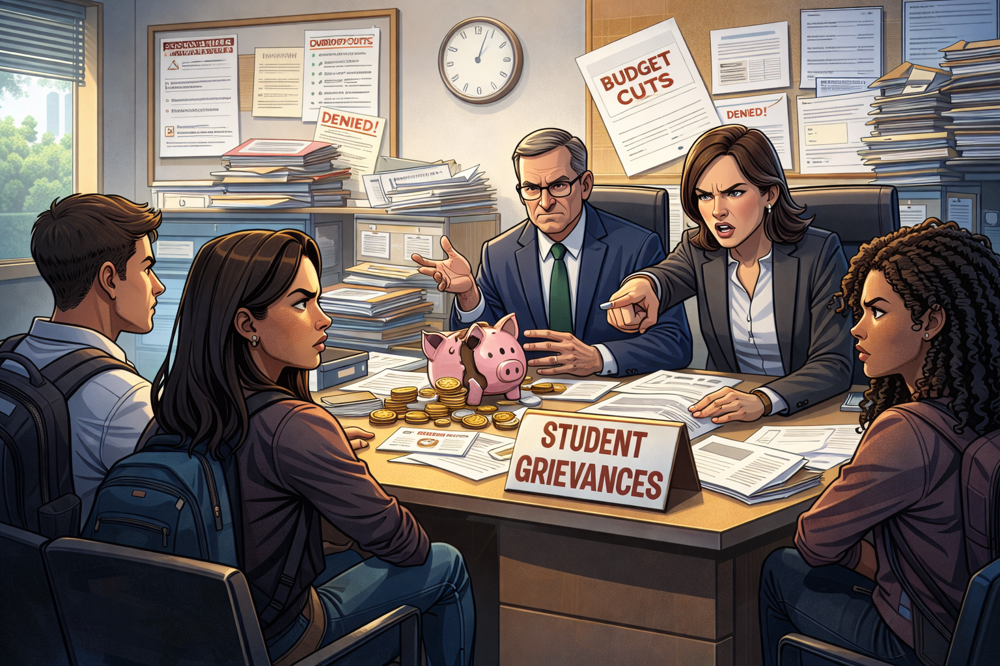
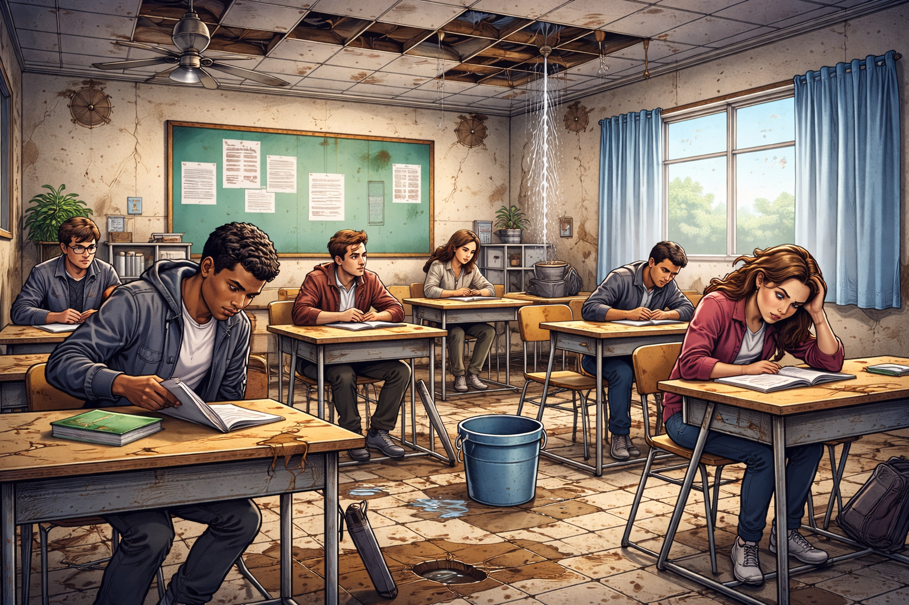
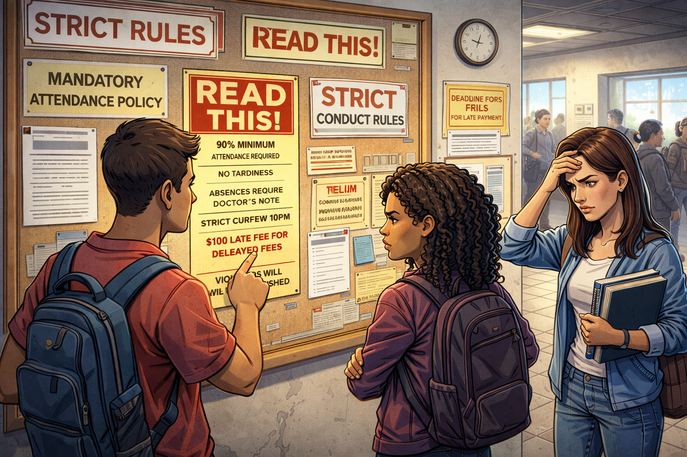
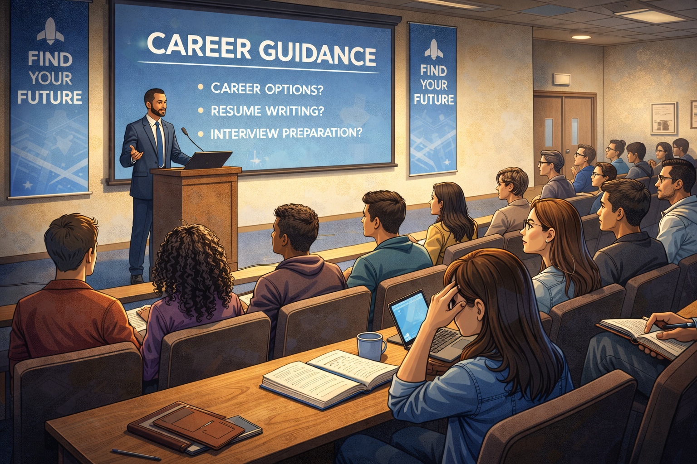
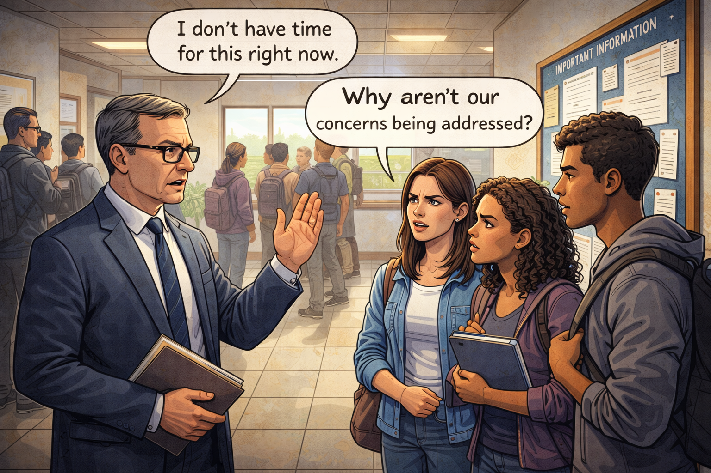
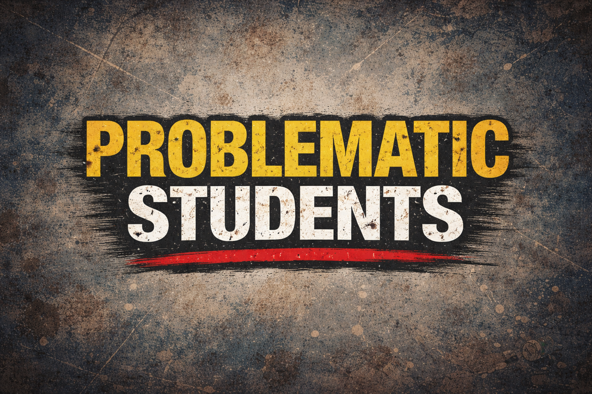
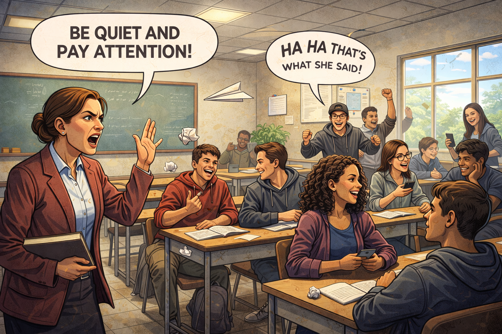
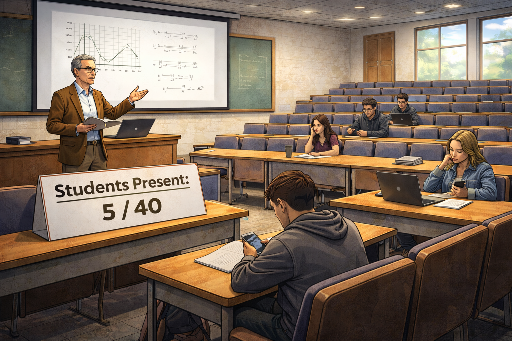
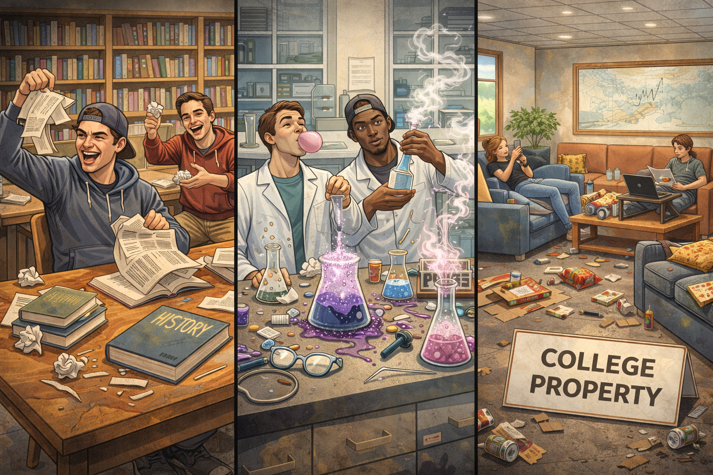
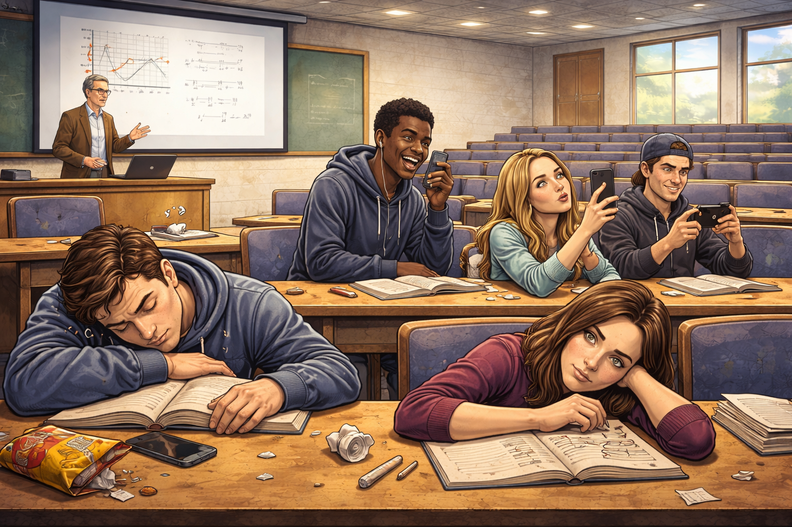

College plays a significant role in shaping the academic and personal development of students. It is a place where young individuals gain knowledge, build professional skills, and prepare themselves for future careers. Apart from academics, college life also helps students develop social skills, teamwork, and responsibility.
However, the college environment is not always free from challenges. Various issues may arise that can affect both the quality of education and the overall student experience. These problems may originate from the college management, such as poor facilities or lack of proper guidance. At the same time, some problems may arise from students themselves, including lack of discipline or low academic focus.
Understanding these challenges from both perspectives is important in order to create a healthy academic environment. When colleges and students work together to solve these issues, it becomes possible to improve learning conditions and create a more productive and supportive campus atmosphere.

Infrastructure plays a crucial role in maintaining a comfortable and effective learning environment. In many colleges, students face problems related to poorly maintained classrooms, damaged furniture, and inadequate laboratory facilities. When classrooms are overcrowded or not properly equipped, it becomes difficult for students to concentrate and actively participate in learning activities.
In addition to classrooms, other facilities such as libraries, computer labs, and study spaces are also essential for academic success. When these facilities are limited or outdated, students may not get the resources they need for research and practical learning. Proper infrastructure is necessary to support both theoretical and practical education.
Furthermore, poor maintenance of college buildings, washrooms, and campus surroundings can create an uncomfortable environment for students. Colleges should regularly upgrade and maintain their infrastructure to ensure a safe and productive learning atmosphere.

Rules and regulations are necessary to maintain discipline within a college campus. They help ensure that students behave responsibly and follow academic guidelines. However, in some institutions the rules may become extremely strict and inflexible, which can sometimes create unnecessary pressure on students.
For example, very strict attendance policies may not consider genuine reasons such as health issues or personal emergencies. Similarly, overly rigid dress codes or restrictions may make students feel that their personal freedom is limited.
When rules are implemented without considering student concerns, it can lead to dissatisfaction and frustration among students. A balanced approach is important, where discipline is maintained while also understanding student needs and circumstances.

One of the important responsibilities of colleges is to help students prepare for their future careers. However, in many institutions students do not receive enough career guidance or professional support. As a result, students may feel confused about their career paths after completing their studies.
Career counseling programs, internships, workshops, and placement training play a vital role in preparing students for the job market. Without these opportunities, students may struggle to understand industry requirements and develop the necessary skills.
Colleges should provide proper guidance through career counseling sessions, industry interactions, and placement assistance. These initiatives help students explore different career options and gain confidence about their professional future.

Effective communication between students and college management is essential for maintaining a positive academic environment. When communication is limited or ineffective, students may feel that their concerns and suggestions are not taken seriously.
For example, students may face difficulties when trying to report issues related to facilities, academics, or campus safety. If there is no proper system to listen to student feedback, problems may remain unresolved for a long time.
Open communication channels such as student meetings, feedback forms, and support systems can help improve the relationship between management and students. When students feel heard and respected, it contributes to a more cooperative and productive campus environment.


Discipline is an important part of maintaining a productive learning environment in colleges. However, some students may fail to follow college rules and behave irresponsibly in classrooms and campus areas. This can create disturbances that affect both teachers and fellow students.
For instance, talking during lectures, arriving late to class, or not paying attention to lessons can disrupt the learning process. Such behavior can reduce the overall quality of education and make it difficult for instructors to conduct classes effectively.
Students must understand that discipline is not only about following rules but also about respecting others in the academic environment. Responsible behavior helps create a positive atmosphere where everyone can focus on learning.

Regular attendance is important for academic success because it allows students to participate in lectures, discussions, and practical sessions. However, some students develop the habit of skipping classes frequently, which can negatively impact their academic performance.
When students miss classes regularly, they may struggle to understand important concepts and fall behind in their studies. This can lead to poor exam performance and reduced academic confidence.
Low attendance can also affect the overall classroom environment, as active participation from students plays an important role in making lectures interactive and engaging. Maintaining regular attendance helps students stay connected with their learning process.

Colleges provide various facilities such as libraries, laboratories, sports areas, and common spaces to support student development. These facilities are meant to enhance learning and provide a comfortable environment for academic activities.
However, sometimes students misuse these facilities by damaging equipment, not maintaining cleanliness, or using resources irresponsibly. Such actions can create additional costs for the institution and reduce the availability of resources for other students.
Students should respect college property and use facilities responsibly. Proper care of campus resources ensures that future students can also benefit from them.

In today's digital age, students face many distractions such as smartphones, social media, and online entertainment. While technology can be useful for learning, excessive use of these distractions can reduce students' focus on their academic responsibilities.
Some students spend more time on social activities or entertainment instead of concentrating on their studies. This can affect their academic progress and limit their ability to achieve their full potential.
Developing good study habits, time management skills, and self-discipline can help students stay focused on their academic goals. Balancing studies with other activities is important for long-term success.

Substance use such as alcohol consumption, smoking, and drug abuse has become a growing concern in some college environments. During college years, students often experience new freedom and social influences, which may lead some individuals to experiment with these substances. Peer pressure, stress, or curiosity can sometimes encourage students to develop unhealthy habits.
The use of alcohol, cigarettes, or drugs can have serious effects on a student’s physical health, mental well-being, and academic performance. Students who develop these habits may struggle to focus on their studies, attend classes regularly, or maintain healthy relationships with others. In some cases, substance abuse can also lead to behavioral problems and disciplinary issues within the college campus.
Additionally, these habits can negatively influence other students and affect the overall campus environment. Colleges aim to provide a safe and healthy learning atmosphere, and substance abuse can disrupt that environment.
To address this issue, both colleges and students should work together to promote awareness about the dangers of substance abuse. Educational programs, counseling services, and support systems can help students make healthier choices and avoid harmful habits.
Friendship and relationships are an important part of college life. Students often build strong friendships and emotional connections during their college years. These relationships can provide support, motivation, and a sense of belonging. However, sometimes friendship and romantic relationship issues can also create challenges for students.
Conflicts between friends, misunderstandings, or breakups in romantic relationships can cause emotional stress and distraction. When students experience these problems, they may find it difficult to concentrate on their studies or participate actively in academic activities. Emotional distress from relationship problems can also affect mental health and overall well-being.
In some cases, students may spend too much time focusing on personal relationships instead of maintaining a healthy balance between their social life and academic responsibilities. This imbalance can affect academic performance and personal development.
It is important for students to maintain healthy and respectful relationships while also prioritizing their education and personal growth. Developing emotional maturity, communication skills, and self-awareness can help students manage relationship challenges more effectively and maintain a balanced college life.
When problems arise from both college management and students, the overall academic environment can be negatively affected. These issues can influence not only the quality of education but also the motivation and well-being of students.
One major impact is reduced academic performance. Poor infrastructure, lack of guidance, or low attendance can make it difficult for students to fully understand their subjects. When students miss important lectures or lack proper learning resources, their academic results may decline.
Another impact is decreased student motivation. If students feel that their concerns are not heard or that the college facilities are not supportive, they may lose interest in their studies. Similarly, when students themselves fail to follow discipline and focus on learning, it can affect the seriousness of the academic environment.
These problems can also lead to conflicts between students and management. When there is poor communication, misunderstandings may occur and small issues can become larger problems. A lack of cooperation between both sides can weaken the relationship between students, teachers, and administrators.
In the long term, these challenges can affect the reputation and development of the institution. Colleges that fail to maintain a positive learning environment may struggle to attract talented students and qualified faculty members.
Habits such as alcohol consumption, smoking, and drug use can have serious consequences on students’ health and academic performance. These habits may lead to reduced concentration, poor attendance, and declining academic results. In addition, friendship conflicts and relationship problems can create emotional stress and distraction for students. When students struggle with these personal challenges, it can affect their motivation, mental well-being, and ability to focus on their studies. As a result, both the individual student and the overall learning environment of the college may be negatively affected.
To improve the college environment, both the management and the students must work together to address these challenges. Cooperation, communication, and mutual respect are key factors in solving many of the issues faced in educational institutions.
From the management side, colleges should focus on improving infrastructure and academic facilities. Well-maintained classrooms, updated laboratories, and accessible libraries can significantly enhance the learning experience. Providing proper career guidance, workshops, and placement opportunities can also help students prepare for their future careers.
Another important step is to encourage open communication between students and management. Colleges can create systems such as feedback forms, student councils, or regular meetings where students can express their concerns and suggestions. When students feel that their voices are heard, it builds trust and cooperation within the campus community.
At the same time, students also have a responsibility to contribute to a positive academic environment. Students should maintain discipline, attend classes regularly, and respect college facilities. Developing good study habits and focusing on academic goals can help students make the most of their college experience.
By working together and understanding each other's responsibilities, both management and students can create a healthier and more productive learning environment.
To address issues related to substance use and relationship challenges, colleges should promote awareness and provide proper guidance for students. Educational programs, counseling services, and student support groups can help students understand the risks of alcohol, drugs, and smoking. Colleges can also encourage healthy lifestyles through sports, cultural activities, and mentorship programs. At the same time, students should learn to manage their friendships and relationships responsibly while maintaining focus on their education. By creating a supportive environment and encouraging positive choices, these problems can be reduced.
Colleges play a vital role in shaping the knowledge, skills, and character of students. A positive and supportive academic environment is essential for students to achieve their full potential and prepare for successful careers.
However, challenges can arise when problems exist within the college system or when students fail to fulfill their responsibilities. Issues such as poor facilities, lack of communication, low attendance, and lack of discipline can affect the overall learning experience.
Recognizing these problems is the first step toward improvement. When college management takes active steps to support students and when students show responsibility and respect toward their institution, many of these issues can be reduced.
In conclusion, creating a successful college environment requires cooperation, understanding, and commitment from both management and students. By working together, colleges can become places that truly promote learning, personal growth, and future success for every student.
In addition to academic and administrative challenges, personal issues such as unhealthy habits and relationship conflicts can also influence student life in colleges. Recognizing these challenges helps create awareness about the importance of maintaining both physical and emotional well-being. When colleges provide proper support and students make responsible decisions, it becomes possible to overcome these difficulties and maintain a healthy and productive learning environment.